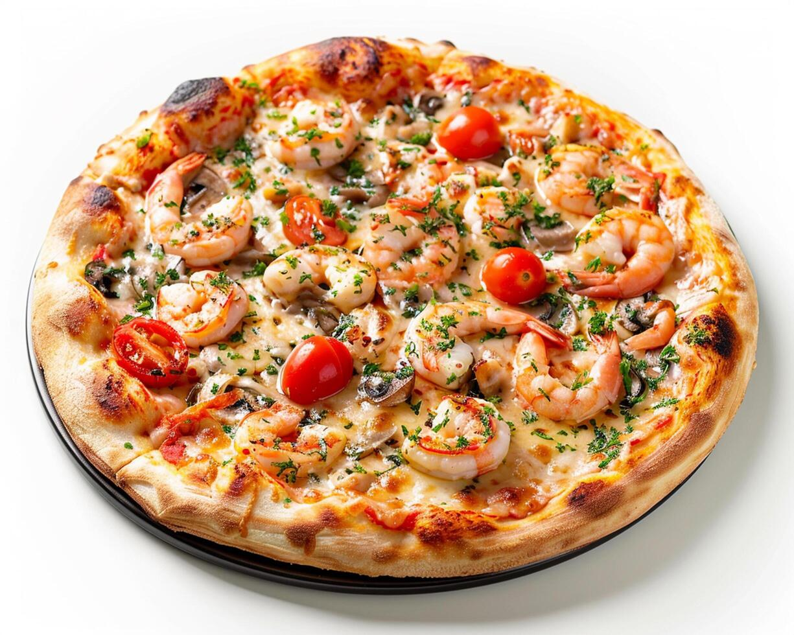

Bem-vindo à Nossa Pizzaria The Pizza Place!
Aqui, cada fatia é uma celebração de sabor! Nossa paixão pela culinária italiana nos inspira a criar pizzas artesanais com ingredientes frescos e de alta qualidade. Seja você um amante das combinações clássicas ou alguém que adora explorar novos sabores, temos a pizza perfeita para satisfazer seu paladar.
-
Prepare-se para uma explosão de sabor! Nossa pizza de mussarela, coberta com uma generosa camada de queijo derretido, é a definição de conforto em cada fatia. Feita com massa artesanal e ingredientes fresquinhos, cada mordida traz a combinação perfeita de cremosidade e crocânciaPrepare-se para uma explosão de sabor! Nossa pizza de mussarela, coberta com uma generosa camada de queijo derretido, é a definição de conforto em cada fatia. Feita com massa artesanal e ingredientes fresquinhos, cada mordida traz a combinação perfeita de cremosidade e crocância
Nossa Tradicional Pizza de Mussarela

Prepare-se para uma experiência gastronômica única!
Delicie-se com Nossa Pizza de Strogonoff de Frango!
-
Nossa pizza de camarão é uma verdadeira delÃcia, feita com camarões frescos, temperados com ervas especiais e coberta com um molho cremoso que vai deixar você querendo mais. Com uma base crocante e queijo derretido, cada fatia é um mergulho no sabor do mar!
Pizza de Strogonof de Frango!
 -
Estamos tão Próximo quanto você imagina 🍕🍤✨
Estamos localizados no endereço abaixo.
R. Castro Alves, 329 - Jardim Santo Antonio, Francisco Morato - SP, 07917-110